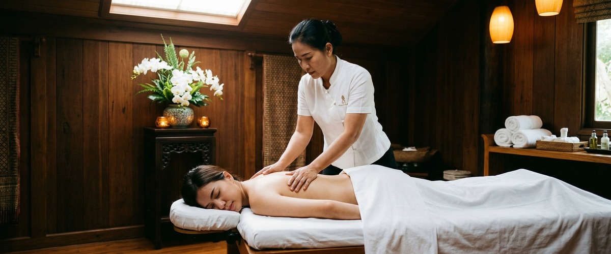
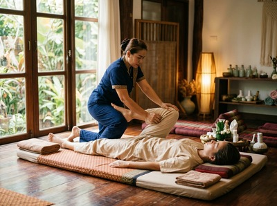
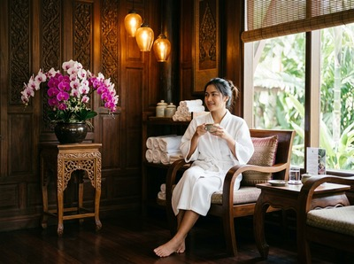

Thai House Massage & Spa occupies one of the most convenient spots in Glasgow city centre, sitting directly across from Central train station on Gordon Street.

For anyone arriving by rail or passing through that part of the city, it is a natural first stop. The business has built a reasonable reputation with 44 reviews and a focus on authentic Thai techniques, and that location alone makes it worth considering.
That said, visitors to Thai House Massage & Spa's website will find very little to go on before booking. There is no pricing displayed, no therapist information, and no online booking system. If you want to know what a session costs, you need to call. If you want to understand who will be treating you or what their background is, that information is not there. That gap is often what brings people to keep searching.

Glasgow Thai Massage is a traditional Thai massage studio on West Nile Street in Glasgow city centre, founded by Maliwan Malone. Maliwan trained at Wat Pho Thai Massage School in Bangkok, the institution recognised as the formal home of traditional Thai massage, and has been practising for over 20 years. Her daughter Jariya trained alongside her and works as a fellow practitioner. That combination of Wat Pho credentials and two decades of hands-on experience is not common in Glasgow, and it shapes every session at the studio.
The full treatment menu at Glasgow Thai Massage covers traditional Thai massage, Thai oil massage, deep tissue massage, sports massage, aromatherapy massage, hot stone massage, head massage, foot massage, and facial massage. All prices are listed on the website before you book. There is no need to call ahead just to find out what a session costs. You can book your appointment at https://glasgowthaimassage.co.uk/booking-form/ without picking up the phone.
Thai House Massage & Spa does not display pricing on its website, which means every potential client must contact the business before they can make an informed decision. Glasgow Thai Massage lists all prices openly, so you know exactly what you are committing to before you arrive. Thai House Massage & Spa's website provides no therapist profiles or credentials. Glasgow Thai Massage's founding practitioners hold formal Wat Pho training and have over 20 combined years of practice, which is verifiable and specific.
Where Thai House Massage & Spa holds a genuine advantage is location. Gordon Street, directly across from Central station, is one of the most accessible addresses in Glasgow, particularly for visitors arriving by train or for clients based south of the river. Glasgow Thai Massage is on West Nile Street, a ten-minute walk from Central station and close to Buchanan Street subway station, which makes it straightforward to reach from most parts of the city but not quite as immediate as a station-facing address. Thai House also has a modest lead in review count at 44, though Glasgow Thai Massage's rating reflects consistent client satisfaction.
Glasgow Thai Massage is particularly well suited to office workers based around Blythswood Square, St Vincent Street, or the Buchanan Street area who want to book a session during a lunch break or after work without a lengthy commute. It also suits people who want to know, before they arrive, who will be treating them and what formal training they hold. Athletes and active people looking for sports massage or deep tissue work alongside traditional Thai technique will find a fuller treatment menu here than at Thai House. And for anyone who has tried to book a massage online only to be redirected to a phone number, the straightforward online booking at Glasgow Thai Massage removes that friction entirely.
From Thai House Massage & Spa on Gordon Street, Glasgow Thai Massage is approximately a ten-minute walk. Head north along Hope Street from Gordon Street, passing the corner of Sauchiehall Street, and continue until you reach Renfrew Street. Turn right onto Renfrew Street and then left onto West Nile Street heading south. Victoria Chambers is at 142 West Nile Street, on your right. Glasgow Thai Massage is on the third floor, Suite 4. If you prefer the subway, Buchanan Street station is a short walk from West Nile Street and connects directly from the St Enoch stop near Central station.
Get driving directions to Glasgow Thai Massage:

Glasgow Thai Massage — Floor 3 Suite 4, Victoria Chambers, 142 West Nile Street, Glasgow G1 2RQ
Book online now at https://glasgowthaimassage.co.uk/booking-form/ and secure your session with a Wat Pho-trained therapist in Glasgow city centre, with all pricing visible before you confirm.
Yes. Glasgow Thai Massage has a full online booking system at glasgowthaimassage.co.uk/booking-form/. You can choose your treatment, select a time, and confirm your appointment without needing to call. Thai House Massage & Spa relies on phone contact to arrange bookings, with no online booking system visible on its website.
Glasgow Thai Massage was founded by Maliwan Malone, who trained at Wat Pho Thai Massage School in Bangkok, the institution formally associated with the origins of traditional Thai massage. She has over 20 years of practice. Her daughter Jariya trained alongside her and is a fellow practitioner at the studio. Thai House Massage & Spa's website does not provide therapist profiles or credential information.
Glasgow Thai Massage is at Floor 3 Suite 4, Victoria Chambers, 142 West Nile Street, Glasgow G1 2RQ. The studio is within walking distance of Buchanan Street subway station and approximately ten minutes on foot from Glasgow Central station. It sits in the heart of Glasgow city centre, close to many of the main office and commercial districts.
The treatment menu at Glasgow Thai Massage includes traditional Thai massage, Thai oil massage, deep tissue massage, sports massage, Thai aromatherapy massage, hot stone massage, Thai head massage, Thai foot massage, and Thai facial massage. Thai House Massage & Spa's listed services are Thai traditional massage, Thai foot massage, and Thai aroma massage, with no additional detail on the website.
Yes. All prices are listed on the Glasgow Thai Massage website, so you can see exactly what each treatment costs before you book. Thai House Massage & Spa does not display pricing on its website, which means prospective clients need to call to find out costs before making a decision.
Glasgow Thai Massage holds a 4.7-star rating drawn from client reviews on Google. The reviews reflect sessions delivered by Maliwan and Jariya, both of whom practise consistently at the studio, so clients are not subject to variation across a large rotating team. The rating reflects the quality of skilled, practitioner-led therapeutic massage rather than a spa environment.
Book your session today at https://glasgowthaimassage.co.uk/booking-form/ and see all pricing and availability before you confirm.